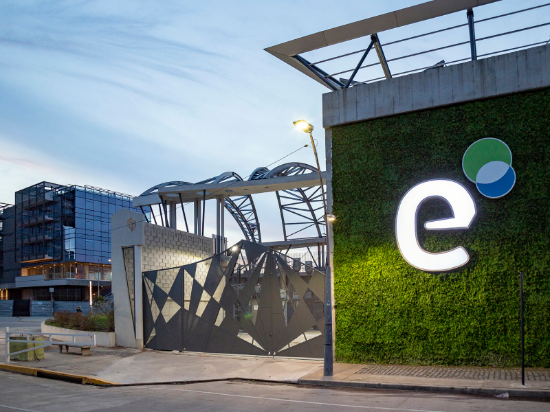
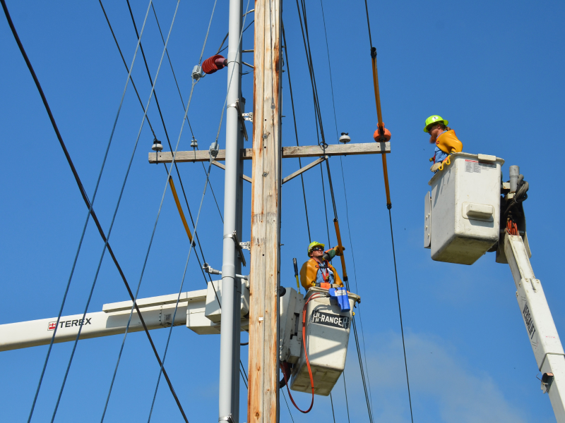
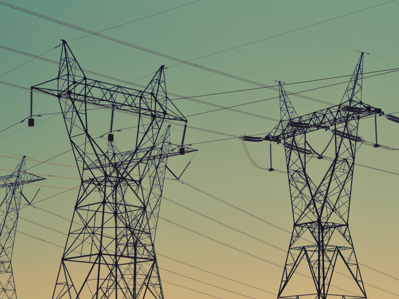
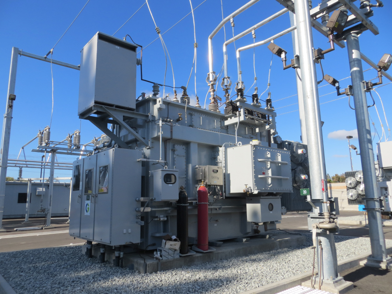
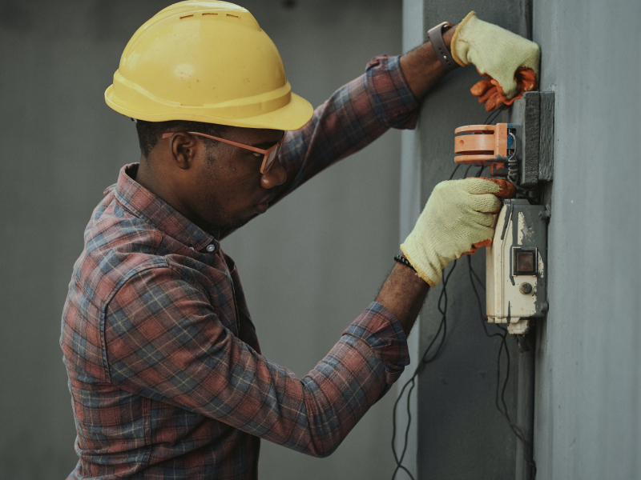

SubEstación Bicentenario
Una de las ultimas subestaciones que se construyeron, ubicada en la zona de Moron.

Lineas de Media Tensión
Trabajos sobre la lina de MT, para la mejora del tendido.

Torres de Alta tensión
Estas torres distribuyen la energía para toda la zona de San Miguel.

Generadores de Media Tensión
Centros de transformación a nivel.

Acometidas generales
Reparación de las lineas de clientes generales.

Caja de toma
Inspección y toma de tensión de las cajas de toma.
Componentes de la Red Aérea
- Línea aérea de Media Tensión: son aquellas que se presentan en postes de hormigón o madera, con una característica muy visible, son tres conductores (tres fases) paralelos entre sí, en forma vertical u horizontal.
-
Centro de transformación (CT): la función de los CT es reducir la tensión de media a baja.
- CT aéreo monoposte o tipo mochila: son aquellos que se encuentran sostenidos por un solo poste.
- CT aéreo biposte o plataforma: son aquellos que se encuentran sostenidos por dos postes de madera u hormigón.
- CT a nivel: son aquellos que se encuentran al nivel del suelo, por lo general los mismos están identificados con el número de CT y nombre en la puerta.
- Línea aérea de Baja Tensión: son aquellos que se presentan en un poste de madera u hormigón, pasando por los mismos tres fases y el cable neutro.
-
Existen diferentes elementos en la línea aérea de baja tensión:
- Cruceta: es el sostén de la LABT (Línea Aérea Baja Tensión) en los postes de madera, por ella pasan los cables de la línea convencional. Se encuentran en el extremo superior del poste en forma de cruz.
- Aisladores de porcelana: son aquellos que se localizan sobre la cruceta, por donde pasa la LABT.
- Rienda: puede ser uno de los sostenes del poste. Se caracteriza por tener en el extremo un tensor que va firmemente enganchado al suelo.
- Postes: son aquellos que sostienen la LABT. Pueden ser de dos materiales, hormigón o madera. En el segundo caso, los que pertenecen a la empresa son lisos. Si el cliente manifestara que el poste posee en sus lados sostenes para subir, dicho poste es de teléfono. La altura de un poste que lleva la LABT es de aproximadamente 7.5 metros o de 11metros.
- Poste cruce de calle: es aquel que se encuentra generalmente en una esquina y traslada desde la LABT la acometida hacia un pilar.
- Contrapostes: son aquellos que sirven para dar apoyo a los postes. Generalmente su ubicación es contra el poste a 45 grados del suelo para su sostén.
- Caja derivadora o de distribución: su diámetro es pequeño (por lo general es de 30 cm x 30), se encuentra en el extremo superior del poste y su objetivo es la distribución de acometidas a diferentes pilares. Su color puede ser blanco, gris o beige y posee una pequeña puerta.
-
Centros de transformación: con la misma función que en la Red Aérea.
- Cámara subterránea: se instalan en zonas que no se inundan.
- Cámara sumergible: son las que se utilizan en los barrios con riesgo de inundación.
- CT a nivel: en su gran mayoría existen en área de provincia, su puerta de acceso está sobre la línea Municipal siendo una construcción de 4x4 metros.
- Cajas de distribución
- Buzón en vía pública o empotrado: el mismo puede diferenciarse de los buzones de teléfono por su cerradura, los que corresponden a Edenor poseen una cerradura rectangular y los de teléfono, redondas.
- Cajas esquineras.
- Cajas de entrada y salida.
- Caja de toma primaria: se encuentra posteriormente a las cajas de distribución y antes de los medidores. En la misma se ubican los portafusibles
- Tablero seccional
- Tablero principal: debe estar ubicado a no más de 2 metros del medidor, puede estar ubicado
- En el pilar detrás del medidor.
- Sobre la caja del medidor.
- En el interior, cercano al medidor.